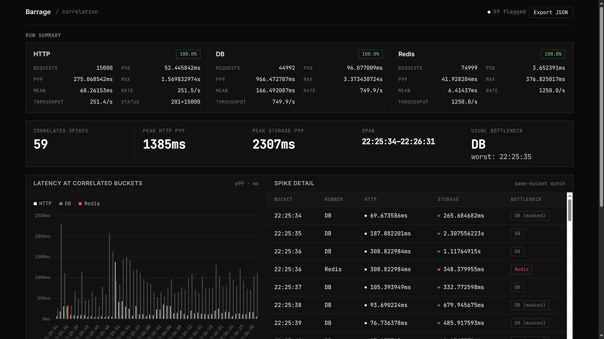
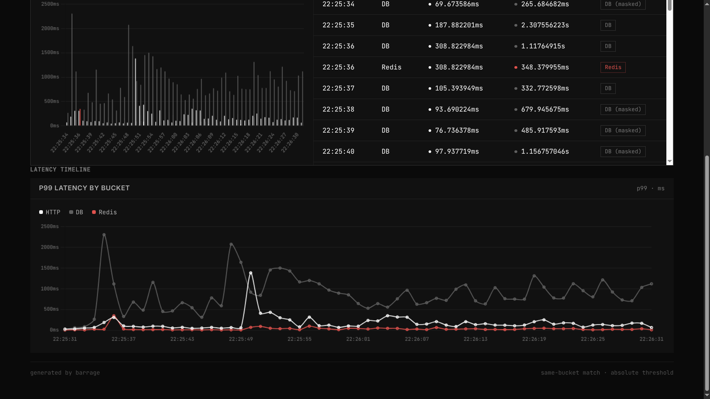

Kyu writes every job to Postgres, then pushes its ID into a Redis sorted set. Workers pop IDs and run your handlers. Wipe Redis tomorrow — every job, retry, and error is still in your database.
go get github.com/codetesla51/kyu

Kyu runs five concurrent subsystems after Start(). They don't talk to each other — each one talks to Postgres or Redis. That shared state is the coordination layer.
Pops the highest-score ID from Redis, fetches the full record from Postgres, runs your handler, and writes the outcome back. Claims are guarded by optimistic locking: a stale worker can never clobber a newer one.
Asks Postgres which scheduled and backoff-delayed jobs are now due, then pushes their IDs into Redis. Postgres holds the schedule; Redis just gets told when to run things.
Resets jobs stuck in running past StaleJobTimeout — the workers that claimed them crashed. The job comes back as pending and runs again.
Re-queues pending jobs that went missing from Redis — a worker died between popping and claiming, or the sorted set was cleared. Nothing waits forever.
Exposes a Prometheus /metrics endpoint the moment you set a port. Each queue instance owns a private registry, so multiple instances in one process never collide.
Every state change is a Postgres write you can SELECT. Redis only answers "what runs next" at microseconds. You get relational durability and sorted-set scheduling without either one doing the other's job.
pending → running → completed. Or failed → re-queued with backoff, then dead. Each change is an update in a normal Postgres table — no vendor API, no hidden state, just SQL.
| status | means | who changes it |
|---|---|---|
| pending | waiting to run, or its scheduled time hasn't arrived | enqueue, scheduler, reapers |
| running | claimed by a worker via optimistic lock | worker pool |
| completed | handler returned nil | worker pool |
| failed | handler returned an error, retries remain | worker pool → scheduler (backoff) |
| dead | handler failed, retries exhausted — kept forever | worker pool |
| cancelled | cancelled before it ran | CancelJob() |
Kyu ships the tooling real queues need — dead letters, a dashboard, a CLI — as part of the library rather than as add-ons you discover you need later.
Redis is a cache; Postgres is a database, and Kyu treats them accordingly. Clear Redis entirely — your jobs are still there, still scheduled, still run.
Priority maps to the Redis sorted-set score. Workers always pop the highest score first — process_payment at 10 beats send_email at 1.
Pass a ScheduledAt time and the scheduler promotes it when the clock catches up. No cron process, no second service.
Fail once → wait 1s. Twice → 2s. Three → 4s. Your downstream service gets a chance to recover instead of absorbing a retry storm.
Jobs that exhaust retries stay dead forever, queryable by SQL. Inspect them, Retry() one, RetryAllDead() the lot onto a dedicated queue, or purge.
Workers stamp locked_by when they claim a job. Every transition is guarded by that stamp, so a worker with a lost claim can't clobber the current owner.
Wrap every job in logging, timing, or auth middleware. Panics in handlers are caught and recorded, not propagated into the worker.
EnqueueMany writes a batch as one COPY into Postgres and one ZADD into Redis — atomic, fast, and IDs come back in input order.
Set MetricsPort and /metrics is live. The included docker-compose provisions Grafana with a prebuilt dashboard — queue depth, throughput, failures by type.
Drains the queue and exits with code 0. Wire it to a Kubernetes CronJob or crontab — no long-running process needed for batch work.
Inspect(id), CancelJob(id), Reset(id), Purge(status), Pause()/Resume(), Stats(), filtered + paginated ListJobs(). All of it, in the library.
Set CallbackURL and Kyu POSTs {job_id, status, payload, error} on completion. Fire-and-forget with a 10s timeout — callbacks never slow down processing.
Handlers are plain Go functions compiled into your binary — no DSL, no sidecar, no sandbox; they share your toolchain and deploy pipeline. Kyu is a job queue, not a workflow orchestrator: no DAG engine, jobs are independent units of work, and multi-step sequences are expressed in application code (each handler enqueues the next job).
The jobs table and its indexes are created by embedded goose migrations on the first Connect(). No code generation step, no extra tooling.
kyu serve · workers + dashboard
kyu enqueue send_email '{"to":"u@ex.com"}'
kyu inspect <job_id> · kyu version
docker compose up --build
→ dashboard :8080 · metrics :9090
→ grafana :3000 (admin/admin)
Give each app a unique QueueName and its Redis sorted set is separate. Apps sharing a name compete for the same jobs — that's how multi-worker deployments scale.
kyu serve starts a web dashboard by default. Live stats stream over SSE, and every management action — retry dead jobs, purge a status, pause workers, enqueue from the UI — is a click away. It's embedded in the binary; nothing extra to install.

| metric | type | what it tracks |
|---|---|---|
| kyu_jobs_total | counter | total jobs ever submitted |
| kyu_jobs_processed_total | counter_vec | completed jobs, labelled by status |
| kyu_job_failures_total | counter_vec | failures, labelled by job_type |
| kyu_jobs_dead_total | counter | jobs that exhausted all retries |
| kyu_queue_depth | gauge | jobs currently waiting in Redis |
Dispatch overhead is under a microsecond — but that's not the ceiling. Cross-layer load testing with Barrage found the real bound is Postgres write latency, which is exactly where durability comes from.
| dispatch benchmark | cost | allocs |
|---|---|---|
| register | ~52 ns/op | 0 |
| execute | ~950 ns/op | 5 |
| execute + middleware | ~1.2 µs/op | 7 |
| execute (parallel) | ~600 ns/op | 5 |
| barrage load test | rate | p99 | success |
|---|---|---|---|
| HTTP enqueue | 251.5/s | 275ms | 100% |
| Postgres | 749.9/s | 966ms | 100% |
| Redis | 1250/s | 41.9ms | 100% |
Redis-only queues are fast until they lose the queue. Postgres-only queues are durable but scan for what to run next. Kyu deliberately splits the difference: Postgres is the ledger, Redis is the dispatcher.
| feature | kyu | asynq | river | machinery | bullmq node |
|---|---|---|---|---|---|
| storage | Postgres + Redis | Redis only | Postgres only | Redis / AMQP / Mongo | Redis only |
| job durability | survives Redis wipe | lost on flush | full | depends on backend | lost on flush |
| priority scheduling | sorted set | weighted | basic | ||
| transactional enqueue | — | — | — | ||
| full job history | SQL | TTL-limited | SQL | limited | TTL-limited |
| stale reaper | limited | — | limited | ||
| orphan reaper | — | — | — | — | |
| prometheus native | separate | — | — | separate | |
| scheduled jobs | |||||
| middleware | — | ||||
| retries + backoff | exponential | exponential | exponential | basic | exponential |
| license | MIT | MIT | MPL | MIT | MIT |